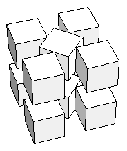
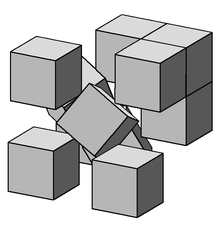
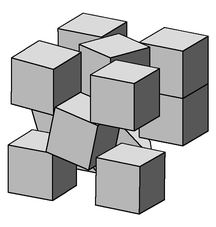
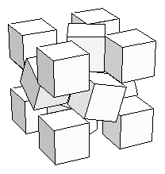
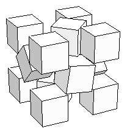
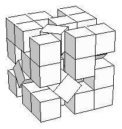

| 9-10.  | 11.  | 12.  | ||
| s = 2 + 1/√2 = 2.707+ Found by Erich Friedman in 1998. | s = 2.89444+ Found by Timo Berthold, et al in March 2026. | s = 2 + 2√2/3 = 2.942+ Found by Erich Friedman in 1998. |
| 13.  | 14.  | 28.-33.  | ||
| s = 2.956+ Found by Erich Friedman in 1998. | s = 2 + 7√2/10 = 2.989+ Found by Erich Friedman in 1998. | s = 3 + 1/√2 = 3.707+ Found by Erich Friedman in 1998. |